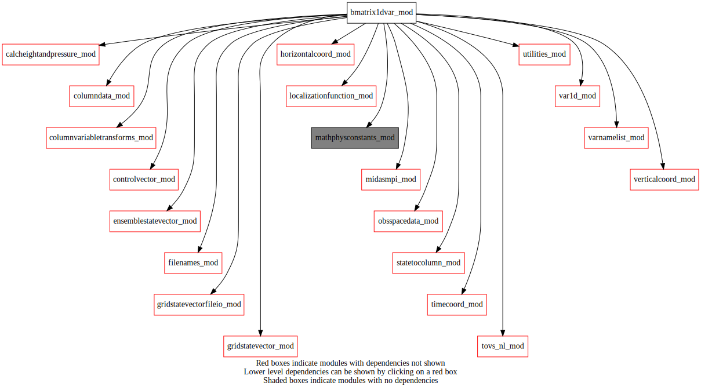
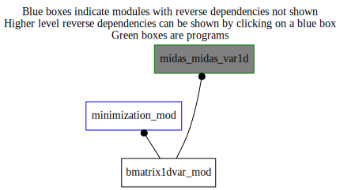

Dependency Diagrams:
 Direct Dependency Diagram¶
 Reverse Dependency Diagram¶
Description
MODULE bmatrix1DVar_mod (prefix=’bmat1D’ category=’2. B and R matrices’)
- Purpose
contains all 1Dvar B matrices.
Quick access
- Variables
- Routines
bmat1d_bsetup(),bmat1d_bsqrtens(),bmat1d_bsqrtensad(),bmat1d_bsqrthi(),bmat1d_bsqrthiad(),bmat1d_finalize(),bmat1d_get1dvarincrement(),bmat1d_setupbens(),bmat1d_setupbhi(),bmat1d_sqrtb(),bmat1d_sqrtbt()Needed modules
mathphysconstants_mod: MODULE MathPhysConstants_mod (prefix=’mpc’ category=’8. Low-level utilities and constants’)
columndata_mod: MODULE columnData_mod (prefix=’col’ category=’6. High-level data objects’)
columnvariabletransforms_mod: MODULE columnVariableTransforms (prefix=’cvt’ category=’4. Data Object transformations’)
controlvector_mod: MODULE controlVector_mod (prefix=’cvm’ category=’6. High-level data objects’)
gridstatevector_mod: MODULE gridStateVector_mod (prefix=’gsv’ category=’6. High-level data objects’)
gridstatevectorfileio_mod: MODULE gridStateVectorFile_mod (prefix=’gio’ category=’4. Data Object transformations’)
horizontalcoord_mod: MODULE HorizontalCoord_mod (prefix=’hco’ category=’7. Low-level data objects’)
midasmpi_mod: MODULE midasMpi_mod (prefix=’mmpi’ category=’8. Low-level utilities and constants’)
obsspacedata_mod: MODULE obsSpaceData_mod (prefix=’obs’ category=’6. High-level data objects’)
timecoord_mod: MODULE timeCoord (prefix=’tim’ category=’7. Low-level data objects’)
utilities_mod: MODULE utilities_mod (prefix=’utl’ category=’8. Low-level utilities and constants’)
verticalcoord_mod: MODULE verticalcoord (prefix=’vco’ category=’7. Low-level data objects’)
tovs_nl_mod: MODULE tovs_nl (prefix=’tvs’ category=’5. Observation operators’)
var1d_mod: MODULE var1D_mod (prefix=’var1D’ category=’4. Data Object transformations’)
filenames_mod: MODULE fileNames_mod (prefix=’fln’ category=’7. Low-level data objects’)
localizationfunction_mod: MODULE localizationFunction_mod (prefix=’lfn’ category=’2. B and R matrices’)
varnamelist_mod: MODULE varNameList (prefix=’vnl’ category=’7. Low-level data objects’)
ensemblestatevector_mod: MODULE ensembleStateVector_mod (prefix=’ens’ category=’6. High-level data objects’)
statetocolumn_mod: MODULE stateToColumn (prefix=’s2c’ category=’4. Data Object transformations’)
calcheightandpressure_mod: MODULE czp_calcHeightAndPressure (prefix=’czp’ category=’4. Data Object transformations’)Variables
- bmatrix1dvar_mod/bmat1d_includeanlvar (*) [character,allocatable/public]¶
- bmatrix1dvar_mod/bmat1d_numincludeanlvar [integer,public]¶
Subroutines and functions
- subroutine bmatrix1dvar_mod/bmat1d_bsetup(vco_in, hco_in, obsspacedata)¶
- Purpose
To initialize the 1Dvar analysis Background term.
- Arguments
vco_in [struct_vco ,in,pointer]
hco_in [struct_hco ,in,pointer]
obsspacedata [struct_obs ,in]
- Called from
- Call to
utl_tmg_start(),utl_abort(),bmat1d_setupbhi(),utl_tmg_stop(),bmat1d_setupbens(),cvm_setupsubvector(),cvm_subvectorexists()
- subroutine bmatrix1dvar_mod/bmat1d_setupbhi(vco_in, obsspacedata, cvdim_out)¶
- Purpose
to setup bmat1D module
- Arguments
vco_in [struct_vco ,in,pointer]
obsspacedata [struct_obs ,in]
cvdim_out [integer ,out]
- Called from
- Call to
gsv_varexist(),utl_abort(),var1d_setup(),utl_matsqrt(),vco_equal()
- subroutine bmatrix1dvar_mod/bmat1d_setupbens(vco_in, hco_in, obsspacedata, cvdim_out)¶
- Purpose
to setup bmat1D module
- Arguments
vco_in [struct_vco ,in,pointer]
hco_in [struct_hco ,in,pointer]
obsspacedata [struct_obs ,in]
cvdim_out [integer ,out]
- Called from
- Call to
utl_abort(),tim_getstamplist(),tim_getdatestamp(),fln_ensfilename(),vco_setupfromfile(),gsv_allocate(),gio_readfromfile(),gsv_varnameslist(),vco_mpibcast(),vco_subsetornot(),vco_deallocate(),mmpi_setup_latbands(),mmpi_setup_lonbands(),ens_allocate(),ens_readensemble(),ens_copymember(),col_setvco(),col_allocate(),obs_numheader(),s2c_nl(),gsv_add(),gsv_deallocate(),col_getcolumn(),col_getvarnamefromk(),vnl_varlevelfromvarname(),ens_deallocate(),lfn_setup(),col_getelem(),col_getlevindexfromvarlevindex(),col_getpressure(),lfn_response(),utl_matsqrt(),col_deallocate()
- subroutine bmatrix1dvar_mod/bmat1d_bsqrthi(controlvector_in, column, obsspacedata)¶
- Purpose
HI component of B square root in 1DVar mode
- Arguments
controlvector_in (cvdim_mpilocal) [real ,in]
column [struct_columndata ,inout]
obsspacedata [struct_obs ,in]
- Called from
- Call to
obs_headelem_r(),tvs_changedstypvalue(),col_getcolumn(),utl_abort()
- subroutine bmatrix1dvar_mod/bmat1d_bsqrthiad(controlvector_in, column, obsspacedata)¶
- Purpose
HI component of B square root adjoint in 1DVar mode
- Arguments
controlvector_in (cvdim_mpilocal) [real ,inout]
column [struct_columndata ,inout]
obsspacedata [struct_obs ,in]
- Called from
- Call to
col_getcolumn(),utl_abort(),obs_headelem_r(),tvs_changedstypvalue()
- subroutine bmatrix1dvar_mod/bmat1d_bsqrtens(controlvector_in, column)¶
- Purpose
Ensemble component of B square root in 1DVar mode
- Arguments
controlvector_in (cvdim_mpilocal) [real ,in]
column [struct_columndata ,inout]
- Called from
- Call to
- subroutine bmatrix1dvar_mod/bmat1d_bsqrtensad(controlvector_in, column)¶
- Purpose
Ensemble component of B square root in 1DVar mode
- Arguments
controlvector_in (cvdim_mpilocal) [real ,inout]
column [struct_columndata ,inout]
- Called from
- Call to
- subroutine bmatrix1dvar_mod/bmat1d_sqrtb(controlvector, cvdim, column, obsspacedata)¶
- Purpose
To transform model state from control-vector space to grid-point space.
- Arguments
controlvector (cvdim) [real ,in]
cvdim [integer ,in,]
column [struct_columndata ,inout] :: OUT
obsspacedata [struct_obs ,in]
- Called from
- Call to
col_zero(),cvm_getsubvector(),utl_tmg_start(),bmat1d_bsqrthi(),utl_tmg_stop(),bmat1d_bsqrtens(),utl_abort()
- subroutine bmatrix1dvar_mod/bmat1d_sqrtbt(controlvector, cvdim, column, obsspacedata)¶
- Purpose
To transform model state from grid-point space to error-covariance space.
- Arguments
controlvector (cvdim) [real ,in]
cvdim [integer ,in,]
column [struct_columndata ,inout] :: OUT
obsspacedata [struct_obs ,in]
- Called from
- Call to
cvm_getsubvector(),utl_tmg_start(),bmat1d_bsqrthiad(),utl_tmg_stop(),bmat1d_bsqrtensad(),utl_abort()
- subroutine bmatrix1dvar_mod/bmat1d_get1dvarincrement(incr_cv, column, columntrlonanlinclev, obsspacedata, nvadim_mpilocal)¶
- Purpose
to compute 1Dvar increment from control vector
- Arguments
incr_cv (*) [real ,in]
column [struct_columndata ,inout]
columntrlonanlinclev [struct_columndata ,in]
obsspacedata [struct_obs ,in]
nvadim_mpilocal [integer ,in]
- Called from
- Call to
- subroutine bmatrix1dvar_mod/bmat1d_finalize()¶
- Purpose
to deallocate memory used by internal module structures
- Call to
{kind=link}
{kind=link}